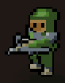
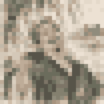

관우

간옹
관우
간옹
관우
+
같은 장면(관우 + 부관 간옹)을 세 가지 방식으로. 각 안: 평소(어둡게) · 선택/마우스(밝게) · 부관 없음(＋). 카드 104×124(2배 표시). 목업이라 일부 도트가 약간 흐립니다.
카드와 같은 질감·같은 2배 정수 배율. 병종 도트를 쓰는 장수가 많아 얼굴로는 구별되지 않으니 이름 글씨(칸 아래)가 식별을 맡습니다. 유관장 같은 고유 도트 장수는 바로 알아보고, 일반 장수는 "같은 병종이면 같은 모습"이 됩니다.

초상을 26×26으로 줄여 14색으로 줄인 뒤 2배 최근접 확대(도트 격자와 같은 질감). 얼굴 식별은 남지만 작은 칸이라 눈코는 뭉개집니다. 둥근 모서리는 그대로.

초상은 그대로 두고 틀만 모서리가 계단 모양(1칸=4px)인 도트 테두리로. 얼굴은 가장 또렷하고, 변경도 가장 작습니다. 질감 차이는 테두리가 완충.